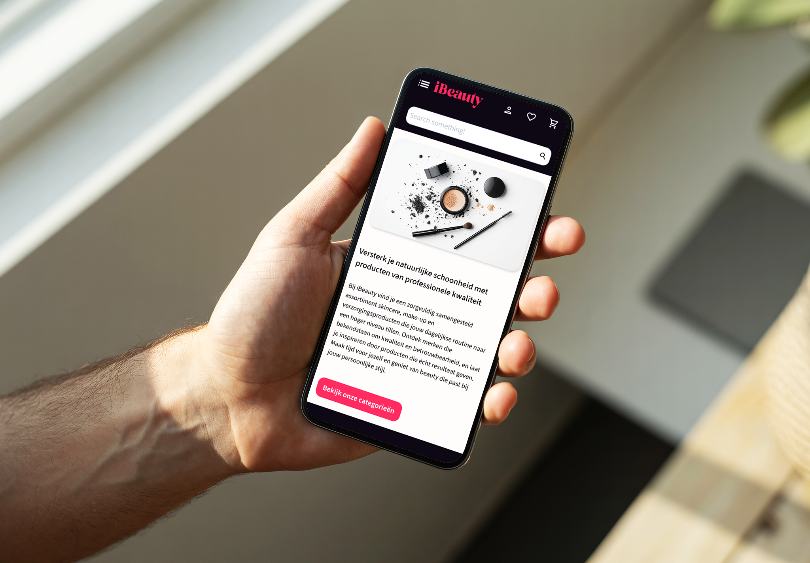
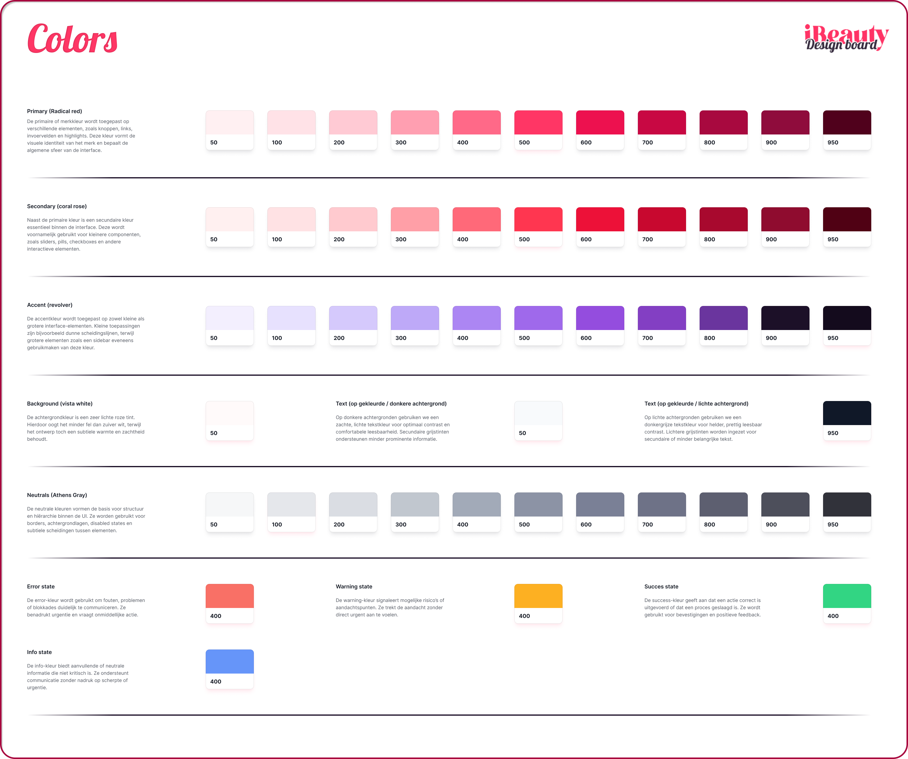
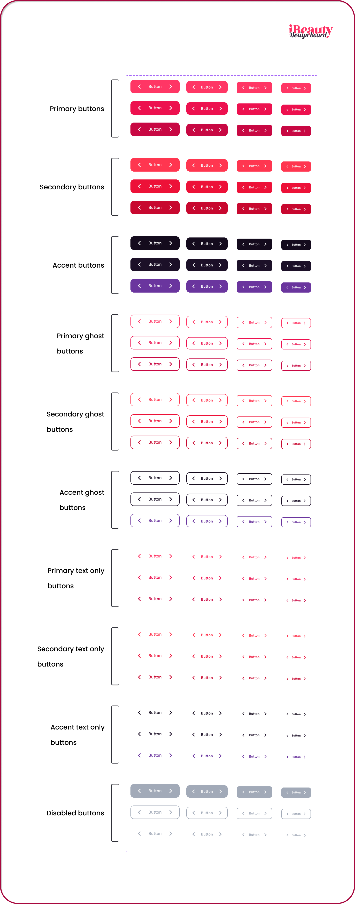

Summary
This case study describes the development process of a unified UI kit for the Ibeauty online store. The main challenge was that the existing online store varied in terms of typography, color schemes, and components, which led to a disjointed user experience and inefficiencies in development. As a UX/UI designer, I documented the inconsistencies, set up a modular design system, and applied it to the web-store designs. Internal testing with the team confirmed that this made the interface clear and usable. The result is a scalable design system with a consistent visual language.

Context
The assignment was part of a bachelor's thesis project at Ibeauty (Hasselt) in collaboration with PXL. As a design intern, I was responsible for both the research and the execution of the redesign. The project lasted approximately 2 to 3 months and included a UI audit of the current online store, the development of a UI kit, page designs, and internal testing. The goal was to create a scalable, consistent design system to make future expansions easier to implement.
Timeline & activities
Problems
The Ibeauty online store exhibited visual inconsistencies: different fonts (Arial, Verdana, etc.) were used interchangeably, and there was no consistent color palette or component style. This not only increased the cognitive load on users but also made collaboration with developers more difficult. In e-commerce, a disjointed checkout experience leads to high drop-off rates. Baymard research shows that ~70% of users abandon their carts during checkout. The lack of a central design framework was therefore a major bottleneck in both user experience and business operations.
Objectives based on problems
- Visual unity: Implementing a consistent look and feel (one primary font, defined color standards, etc.).
- Improved task completion: Users can complete tasks (e.g. checkout) faster and without errors.
- Conversion increase: Optimizing the checkout flow should lead to more purchases.
- Efficiency improvement: New pages built with the UI kit can be developed faster, saving time and money.
Research and Findings
I began with a UI audit of the existing online store. During this process, I assessed the typography, colors, and components. Key findings included:
Typography
At least four different fonts were used. This disrupted the hierarchy and weakened the brand identity.
Colors
The palette was cluttered, with no clear secondary colors and missing status colors (e.g. success, warning).
Components
Buttons, forms, and other UI elements varied significantly from page to page. Many components needed to be redesigned or modified.
Key insights
Design faster with reusable patterns: A centralized UI kit saves time — reusable elements allow new pages to be created in a single design style.
Evolve toward a design system. By building the UI kit in a modular way (with foundations, components, and variants), the project provides a basis for future expansions.
Consistency enhances usability. Inconsistencies in fonts, colors, and component styles hinder the user learning process.
Ideation phase and alternatives
I considered several approaches:
Ad-hoc adjustments
Individually fix pages here and there (but not scalable).
Designing a UI kit
Chosen approach: long-term consistency and saves a lot of work later on.
Complete redesign
Rebuild the entire web shop from scratch (high-risk alternative).
I opted for the UI kit approach. This aligned with best practices: a UI kit offers a standardized user experience and avoids "many isolated updates" across the site. At the same time, it serves as the first step toward a full-fledged design system.
Design Decisions
7.1 Structure of the UI kit
Foundation (base styles)
Atomic design elements (typography, colors, grids, spacing, etc.). These form the visual foundation for the entire Ibeauty template.
Components
Reusable UI elements (buttons, forms, cards, etc.) with multiple variants, states, and sizes.
Sections
Ready-to-use page building blocks (e.g. product overview, checkout section) that ensure consistent layouts across pages.
7.2 Key features (before/after)
| Feature | Before | After redesign (with UI kit) |
|---|---|---|
| Font | Mix of Arial, Verdana, etc. with no hierarchy | Single font family with consistent style |
| Color scheme | Fragmented, undefined scheme | Standardized palette (pink #FF3655, grey, black) |
| Button styles | Different per page | Uniform component (same dimensions and code) |
| Iconography | Mixed and outdated | Consistent icon set |
| Page layout | Inconsistent sections and grids | Reusable layout patterns (e.g. grid for products) |
7.3 Checkout flow
Each of these steps now uses standardized UI components with clear feedback. According to Baymard's research guidelines, such improvements are crucial for preventing drop-offs.
Results and lessons learned
8.1 Results
By implementing the UI kit, the interface is now uniform and reliable. Consistent feedback and navigation elements make the process predictable for users. Research shows that this is crucial for user trust and conversion. Brand consistency has been strengthened and its maintenance has been simplified: developers can quickly assemble components using clear guidelines.
Ultimately, this project marks the first step toward a design system. The core principles are documented in the UI kit, meaning expansions — such as a mobile app — can be implemented quickly without visual inconsistencies. The positive internal feedback demonstrates that we have achieved our goals.
8.2 Lessons learned
- A systematic approach works. Early and frequent testing (as recommended by Nielsen) quickly yielded actionable insights.
- Comprehensive documentation helps. We provided numerous wireframes, mock-ups, and test results to support our design.
Selected visuals



